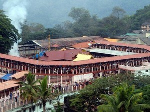

India is a vast country, with diverse cultures and ancient civilization. There are a number of religious groups residing in India. In India we find the oldest pilgrimage tradition in the whole world. The practice of pilgrimage in India is so deeply embedded in the cultural psyche and the number of pilgrimage sites is so large that the entire subcontinent may actually be regarded as one grand and continuous sacred place. The earliest sources of information on the matter of sacred space come from the Rig Veda and the Atharva Veda.
Following the Vedic period the practice of pilgrimage seems to have become quite common, as is evident from sections of the great epic, the Mahabharata (350 BC), which mentions more than 300 sacred sites spanning the sub-continent. By the time of the Puranas, the number of sacred sites had grown considerably, reflecting both the ongoing assimilation of aboriginal sacred places and the increased importance of pilgrimage as a customary religious practice.
Amritsar

Amritsar is an ancient pilgrimage town and headquarters of Amritsar district in Punjab state. It is the most popular Sikh shrine in Punjab and also one of the top places of pilgrimage in India.Amritsar literally means 'the pool of nectar'. The name Amritsar is derived from Amrit Sarovar, the holy tank that surrounds the marvelous Golden Temple. The town of Amritsar was founded in 1577 CE by Guru Ram Das, the 4th Sikh guru and the village was named as Ram Das Pura after him. Amritsar is the place where the tragic episode of the Jallianwala Bagh Massacre took place under the British rule. It also witnessed Operation Blue Star in 1984 under the late prime minister of India, Smt. Indira Gandhi.Amritsar is world famous for its Golden Temple, the seat of Sikh religion.
Estimated price
6000 to 32000
Badrinath
Badrinath is the most important of the four sites of famous Char Dham pilgrimage; the other three being Puri, Dwarka and Rameshwaram. It is also visited as part of Chota Char Dham Pilgrimage along with Kedarnath, Yamunotri and Gangotri in Himalayan region of Uttarakhand. Surrounded by Nar and Narayana mountain ranges and the Nilkantha peak, Badrinath has great mythical significance. This holy town is mentioned as Badari or Badarikashram in many ancient texts and scriptures. According to the epic Mahabharata, Badrinath is the site where Nara and Narayana, the dual forms of Vishnu, did meditation. It is also believed that the Pandavas passed through Badrinath on their way to heaven. Legend has it that Sage Vyasa authored Mahabharata at a cave in Mana, which is about 4 km from Badrinath.
Estimated price
10000 to 30000
Dwaraka
Dwarka is an ancient city situated on the banks of Gomti River in the northwestern Indian state of Gujarat. Dwarka is one of the most significant Hindu places of pilgrimage in India, and among the must include places in Gujarat tour packages.Located on the western tip of the Saurashtra peninsula in Gujarat, Dwarka is popularly known as the 'home of Lord Krishna' and is believed to have been the first capital of Gujarat. Also, Dwarka is one of the foremost Char Dhams for Hindus and among the seven most ancient religious cities (sapta puris) in India. The literal meaning of Dwarka is the 'gateway to heaven' in Sanskrit, as Dwar means gate and ka refers to Lord Brahma. For this reason, the town attracts thousands of pilgrims throughout the year as part of Dwarka tour packages.
Estimated price
6000 to 14000
Haridwar
Haridwar, or Hardwar is an ancient religious city in the Haridwar district of Uttarakhand. It is one of the top places of pilgrimage in India, and among the best places to visit in Uttarakhand.Situated on the banks of the River Ganges, Haridwar, literally translated as Gateway to God, is one of the seven holiest places for Hindus. It is the place where the river Ganga descends to the plains. It serves as a gateway to the Char Dham destinations of Uttarakhand which are Badrinath, Kedarnath, Gangotri, and Yamunotri. Haridwar is also one of the well known places to visit near Delhi.
Estimated price:
6000 to 14000
Kedarnath
Kedarnath is a town and a famous center of pilgrimage in Uttarakhand situated in Rudraprayag district.Kedarnath is a popular pilgrimage destination for Hindus and is one of the four major Places to visit in Uttarakhand known as Chota Char Dham pilgrimage that also includes Badrinath, Gangotri and Yamunotri. It lies at an altitude of 3584 m near Chorabari Glacier, the head of river Mandakini. It is the most remote of the four Char Dham sites and is flanked by breathtaking snow-clad peaks.
Estimated price
10000 to 30000
Kumbakonam
Kumbakonam is one of the ancient temple town located amidst the two rivers Cauvery and Arasalar in Thanjavur district of Tamil Nadu. Kumbakonam is one of the top places to visit in Tamilnadu, and among the popular places to visit near Chennai.Kumbakonam is known for its temples and mutts (monasteries) which are the main highlights of Kumbakonam tour packages. The name Kumbakonam in English means the Pot's Corner. In the olden days, it was called Thirukudamookku and it is also popularly called Kudanthai now. According to history, Kumbakonam dates back to the Sangam period and was ruled by the Early Cholas, Pallavas, Medieval Cholas, Later Cholas, Pandyas, the Vijayanagar Kings, Madurai Nayaks, Thanjavur Nayaks, and the Thanjavur Marathas.
Estimated price
6000 to 25000
Madurai

Madurai is the third-largest city in Tamilnadu. It is one of the most famous places of pilgrimage in Tamilnadu, and among the must-visit places as part of Madurai packages.Situated on the banks of the River Vaigai, the city is very well known for Madurai Meenakshi Temple, among the most famous places to visit in Madurai. Often referred to as Athens of the East, Madhurai is the oldest continually inhabited city in the Indian peninsula with a history dating back to the Sangam period of the pre-Christian era. It has been inhabited since at least the 3rd century BCE. It is considered the cultural capital of Tamilnadu.
Estimated price
6000 to 30000
Nashik

Nashik or Nasik is a religious city located in the northwest region of Maharashtra in India and is the administrative headquarter of the Nashik district. Nashik is the third-largest city by population in Maharashtra and also one of the popular pilgrimage places to visit in Maharashtra.Nashik is one of famous places to visit near Aurangabad. Situated at an altitude of 700 m, Nasik has been called the Wine Capital of India and is situated on the banks of River Godavari. Nashik is famous for its numerous temples constructed during the reigns of different rulers that can be visited as part of Nashik holiday packages.
Estimated price
5000 to 15000
Rishikesh
Rishikesh is a holy city on the banks of the River Ganges in Uttarakhand. Located at the foothills of the Himalayas, it is one of the top places of pilgrimage in India, and among the must-include places in Uttarakhand tour packages.Rishikesh is the gateway to the upper Garhwal region and the starting point for the Char Dham pilgrimage (Gangotri, Yamunotri, Badrinath and Kedarnath). Rishikesh is situated at an altitude of 356 m and consists of three distinct areas known as Rishikesh, Swargashram, and Muni Ki Reti. Rishikesh has been a part of the legendary Kedarkhand (the present-day Garhwal). As per the Skanda Purana, Lord Vishnu appeared here to Raibhya Rishi as Hrishikesh, which means the God of Senses.
Estimated price
6000 to 18000
Sabarimala

Sabarimala is a revered Hindu shrine located in the Pathanamthitta district of Kerala. It is one of the famous places pilgrimage in India, and among the must-include places in Kerala tour packages.Dedicated Lord Ayyappan, Sabarimala Ayyappa Temple is one of the oldest temples in India, with a history of more than 5000 years old. It is one of the most visited pilgrim centers in the world with an estimated 45 - 50 million devotees every year. The temple is situated amid 18 hills, at an altitude of about 3000 feet. It is believed that Lord Parasurama installed the idol of Ayyappa at Sabarimala.
Estimated price
5000 to 10000
Shiridi

Shirdi is a pilgrimage town located in Ahmednagar district of Maharashtra. This is one of the popular places of pilgrimage in Maharashtra as well as in India.Shirdi is home to the shrine of Shirdi Sai Baba, which is the main attraction for the devotees as part of Shirdi tour packages. Sai Baba, who belonged to the 20th century, is known as one of the greatest saints of India. Sai Baba visited Shirdi when he was 16 years old and stayed there until he died in 1918. Sai Baba transformed this small village into a holy pilgrimage site for his devotees. This is one of the must include places in Maharashtra tour packages.
Estimated price:
6000 to 17000
Thanjavur

Thanjavur, also known as Tanjore, is a city and district headquarters in the state of Tamil Nadu. Situated on the banks of River Cauvery, Thanjavur is one of the popular places of heritage in Tamilnadu, and among the must include places in Tamilnadu tour packages.Thanjavur is famous for the Brihadeeswarar Temple built by Rajaraja Chola in the year 1010 AD. Also known as the Big Temple, it is one of UNESCO World Heritage Sites in India and also one of the popular places to visit as part of Thanjavur tour packages.Thanjavur is one of the older cities in Tamil Nadu and has a lot of significance in Dravidian history.
Estimated price
5000 to 20000
Tirupathi
Tirupati is a pilgrimage city in the extreme southeast of Andhra Pradesh in Chittoor district. It is often referred as a synonym to Tirumala (called as Tirumala Tirupati), which is a sacred temple town famous for Sri Venkateswara Temple also known as Tirumala Tirupati Balaji Temple. Tirupati along with Chandragiri is an ideal Chennai getaways for a two day trip and also one of the top Andhra Pradesh tourist places.Tirupati is one of the most ancient and sacred pilgrimage sites in India. Tirumala, the home of Lord Venkateswara is at a distance of 22 km from Tirupati. However, Tirupati is the town and transport hub to Tirumala at the bottom of the hill.
Estimated price:
4000 to 17000
Varanasi

Varanasi is an ancient city located on the banks of river Ganga in Uttar Pradesh, India. It is one among the most revered places of Pilgrimage in India and also one of the best places to visit in Uttar Pradesh.Also known as Kashi and Banaras, the city gets its name from two rivers Varuna and Assi. Nicknamed as the cultural capital of India, Varanasi was the seat of learning in the past. Legend has it that Lord Shiva himself established this holy city as his abode. It is one of the twelve Jyotirlinga sites in India and also one of the Shakti Peethas. Varanasi is an important destination among Hindus as they believe those who die in Varanasi will attain salvation.
Estimated price:
6000 to 13000